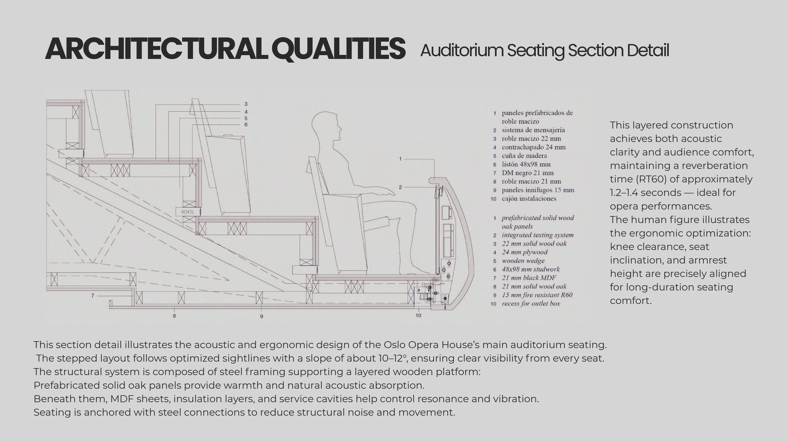
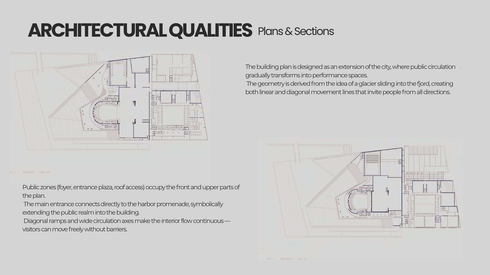
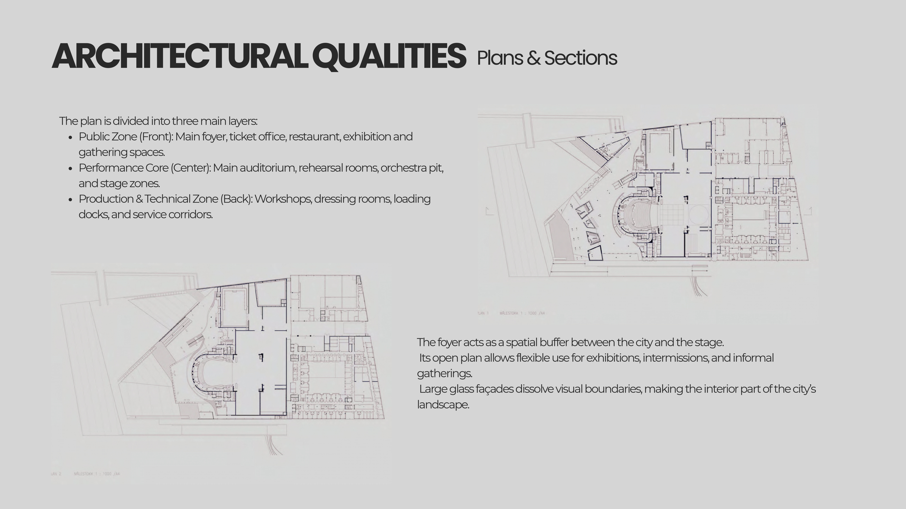
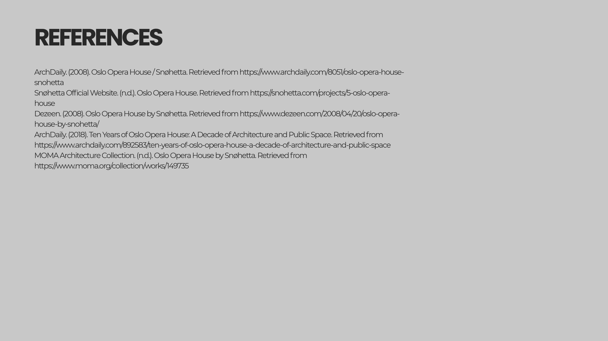

<!DOCTYPE html>
<html lang="tr">
<head>
    <meta charset="UTF-8">
    <meta name="viewport" content="width=device-width, initial-scale=1.0">
    <title>Oslo Opera House - Feyza Türkmen</title>
    <style>
        body { margin: 0; padding: 0; background: #ffffff; }
        /* Geri dön butonu - Şık ve sabit */
        .back-nav { 
            position: fixed; top: 20px; left: 20px; z-index: 999;
            background: rgba(0,0,0,0.7); color: white; padding: 10px 20px;
            text-decoration: none; font-family: sans-serif; font-size: 12px;
            letter-spacing: 1px; border-radius: 50px; backdrop-filter: blur(5px);
        }
        /* Görselleri alt alta dizen bölüm */
        .project-container { width: 100%; display: flex; flex-direction: column; align-items: center; }
        .project-container img { 
            width: 100%; 
            max-width: 1600px; /* Ekran genişliğine göre ayarlanır */
            height: auto; 
            display: block; 
            margin: 0; /* Boşlukları sıfırlar */
        }
   <style>
    body { margin: 0; padding: 0; background: #f4f4f4; } /* Arka planı çok hafif gri yaptık ki paftalar belli olsun */
    
    .nav-bar { position: fixed; top: 0; width: 100%; background: white; padding: 20px; text-align: center; z-index: 1000; border-bottom: 1px solid #ddd; }
    .nav-bar a { text-decoration: none; color: #1a2f23; font-weight: bold; letter-spacing: 2px; font-size: 12px; }

    .project-flow { 
        max-width: 1000px; /* Kenarlardan boşluk bırakmak için genişliği sınırladık */
        margin: 100px auto; /* Sayfayı ortaladık ve üstten boşluk bıraktık */
        background: white; 
        box-shadow: 0 0 50px rgba(0,0,0,0.05); 
    }

    .project-flow img { 
        width: 100%; 
        height: auto; 
        display: block; 
        margin-bottom: 40px; /* Paftalar arasına boşluk koyduk */
    }
</head>
<body>

    <a href="index.html" class="back-nav">← GERİ DÖN</a>

    <div class="project-container">
        
        
        
        
        
         
        
         
         
        
        
        
        
        
        
        
    </div>

</body>
</html>
